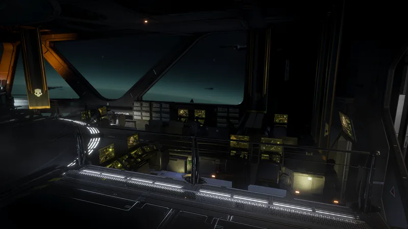

“采取一系列行之有效的措施调动积极性，提高船员的总体效率。采取的措施包括举办公民纪念日庆典活动，以及允许带薪如厕等。— 舰船管理终端
采取一系列行之有效的措施调动积极性，提高船员的总体效率。采取的措施包括举办公民纪念日庆典活动，以及允许带薪如厕等。
— 舰船管理终端
士气强化 is a Tier 5 舰船模块 升级 for the 舰桥.
降低 冷却时间 for 所有 战略配备 by 5%.
1.000.4042024-07-04
已添加 to the 游戏.